Portfolio
 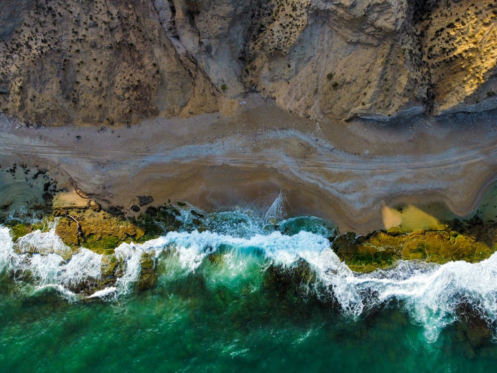
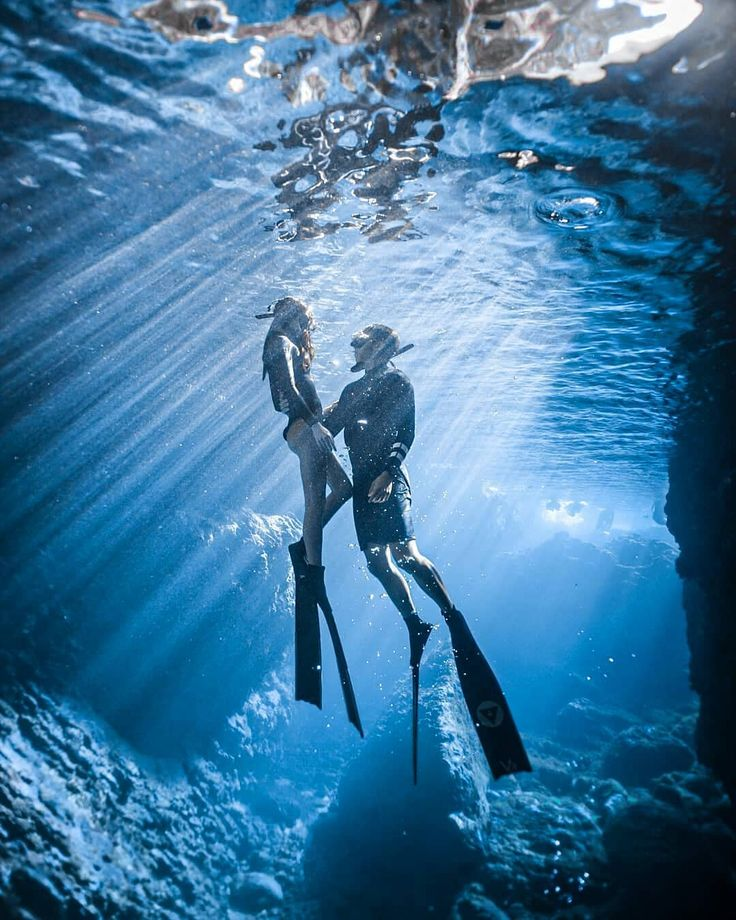
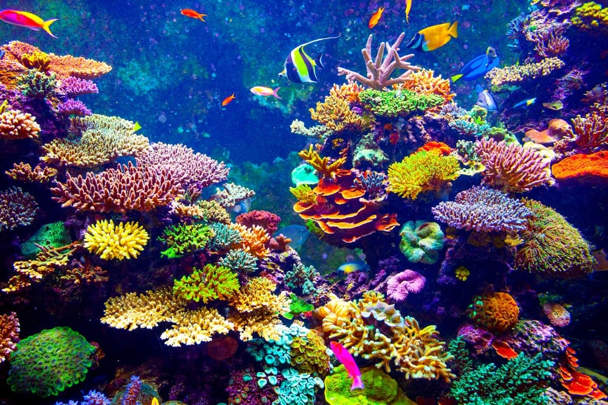
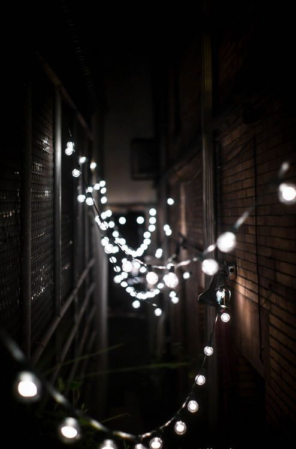
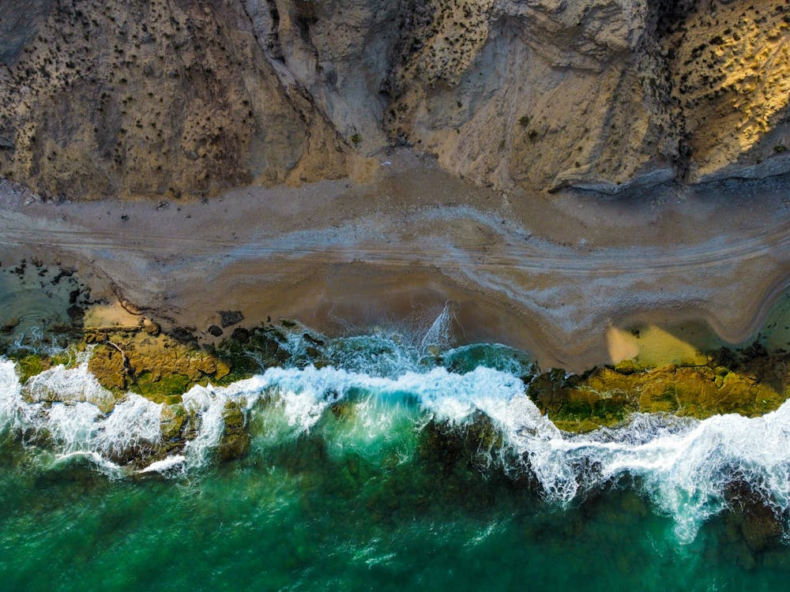
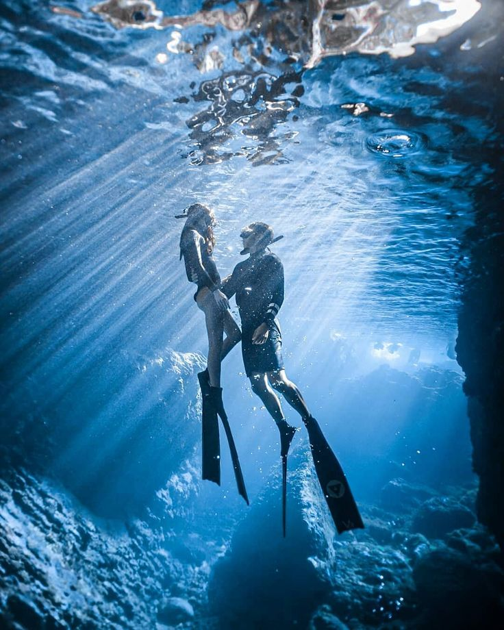
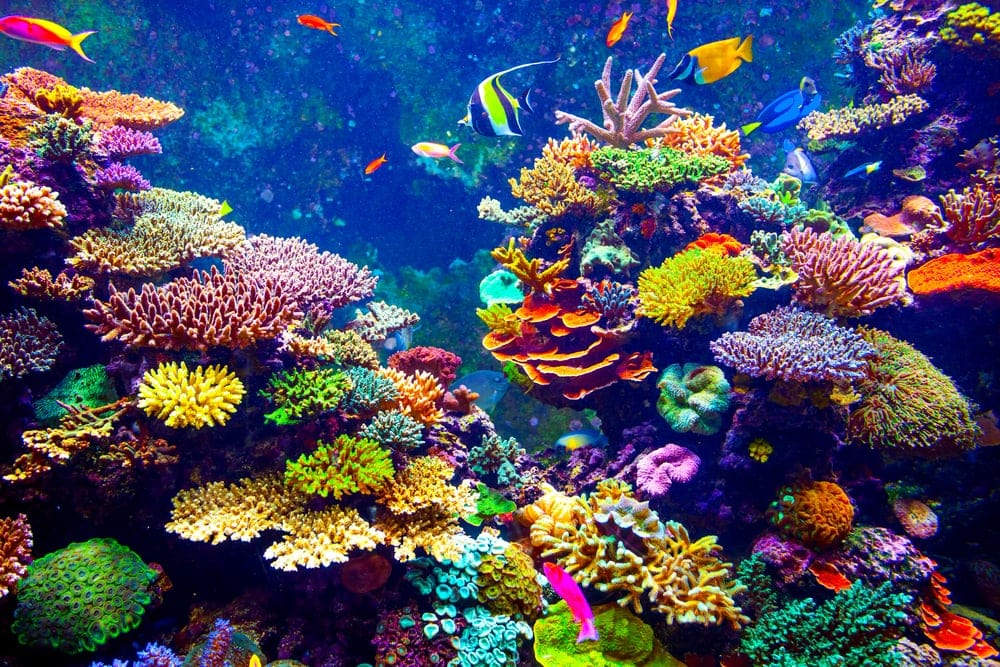
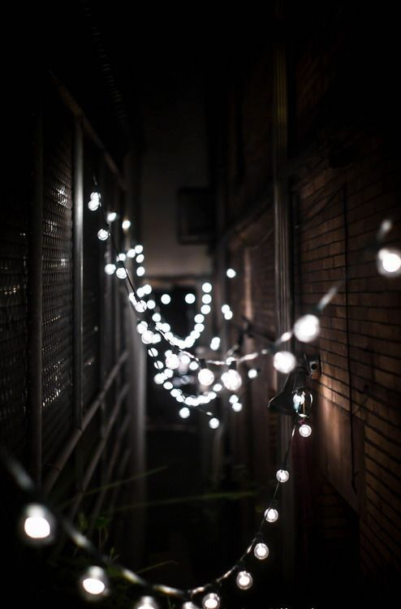

Ich bin Madelyn Clove, Fotografin mit einer Leidenschaft dafür, das Ungewöhnliche und Besondere in Bildern festzuhalten. Mit einem kreativen Ansatz und einem Gespür für Ästhetik arbeite ich eng mit meinen Kunden zusammen, um individuelle und unvergessliche Ergebnisse zu erzielen. Mein Ziel ist es, Geschichten zu erzählen, die berühren und inspirieren.
Erlebt die Welt aus einer neuen Perspektive! Mit professionellen Drohnenaufnahmen halte ich einzigartige Momente aus der Vogelperspektive fest. Ob beeindruckende Landschaften, Architektur oder kreative Projekte – diese Perspektive verleiht euren Ideen einen außergewöhnlichen Charakter.
Für diejenigen, die das Besondere suchen: Ich fange atemberaubende Szenen unter Wasser ein, sei es für kreative Projekte, Paarshootings oder thematische Inszenierungen. Jede Aufnahme ist ein Kunstwerk, das die magische Atmosphäre der Unterwasserwelt widerspiegelt.
Lasst uns eure Ideen in Bilder umsetzen! Ich biete kreative und kunstvolle Fotografie, die Geschichten erzählt, Emotionen weckt und Gedanken anregt. Perfekt für besondere Projekte, Kampagnen oder persönliche Visionen, die durch innovative und außergewöhnliche Inszenierungen zum Leben erweckt werden.
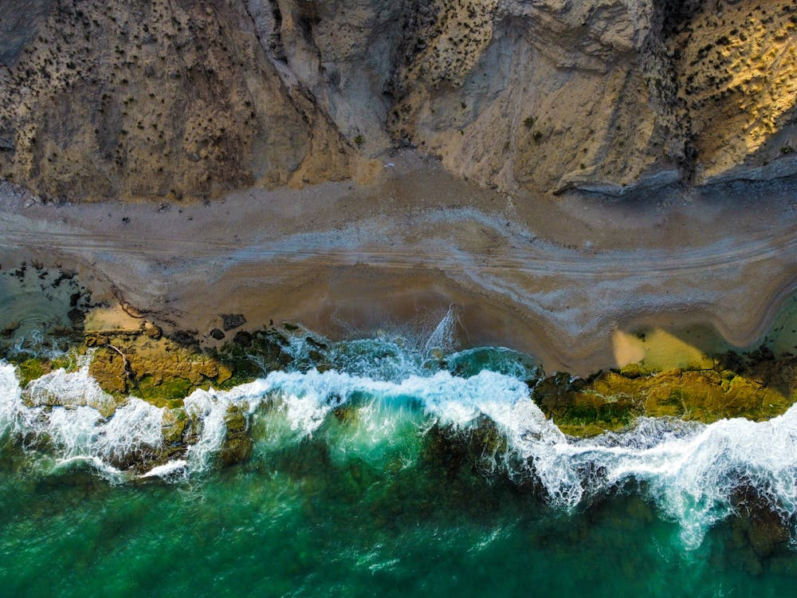
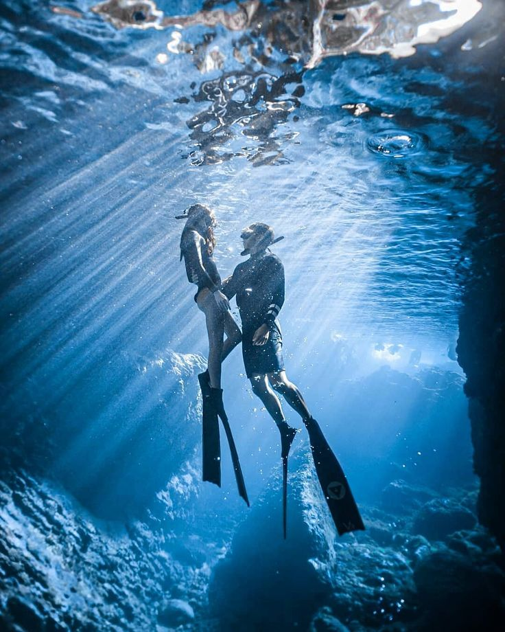
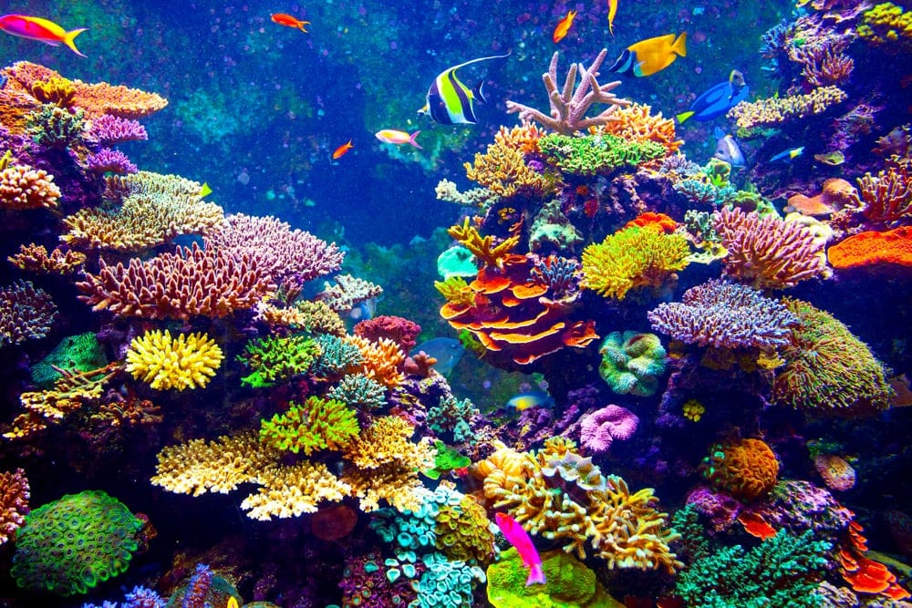
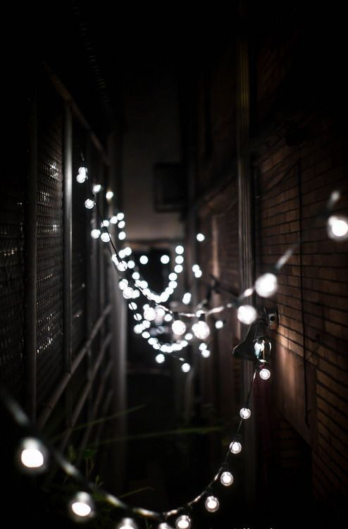
| Adresse: | 123 Harmony Lane 10178 Berlin, Deutschland |
| Telefon: | +49 30 12345678 |
| E-Mail: | madelyn.clove@fotografie.de |